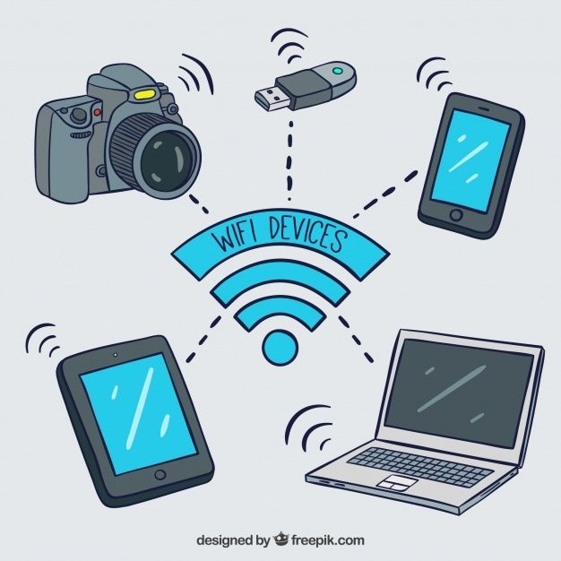

Descubriendo cómo la innovación ha moldeado nuestra civilización.

Desde la invención de la rueda hasta la computación cuántica, la tecnología es la historia de la curiosidad humana.
La tecnología no es solo entretenimiento; es la infraestructura de nuestra supervivencia moderna.
| Área | Beneficio Principal |
|---|---|
| Salud | Diagnósticos por telemedicina. |
| Educación | Acceso infinito al conocimiento global. |
| Ambiente | Energías renovables para un futuro verde. |